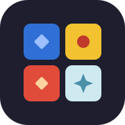
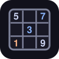

🎨
Gringo Casual Gaming
Play friends by text, pass one phone around, or take on the computer.

Mosaic
Tile drafting · 2–4 players
›
Sixes
Lines of color and shape · 2–4 players
›
Chess
By text link or against the computer
›

Sudoku
Solo puzzles · four levels · saves as you go
›
Every game works offline
once you've opened this page with a signal. For a one-tap icon: Share ›
Add to Home Screen
. Nothing is stored online — games live on your phone and in the links you send.